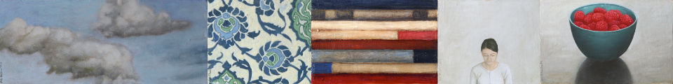

La vital importància de les coses mínimes
Eudald Camps
Diari de Girona
25 setembre 2009

Qui més qui menys pot intuir que la felicitat no és res més que l’acceptació de les pròpies potencialitats i, és clar, la seva actualització (sempre que això no impliqui violències excessives). En aquest sentit, res és més dramàtic (o patètic, depenent del cas) que veure com determinades pràctiques artístiques s’escarrassen per contenir discursos desmesurats que no només els van grans sinó que impossibiliten lectures més relaxades com, per exemple, aquella que fa referència a la remota emoció estètica preocupada per la bellesa i els seus subordinats. Goya podia parlar dels desastres de la guerra perquè els duia incorporats; l’informalisme trobava el seu sentit en la memòria de l’ensorrament patit per la consciència europea després de la segona guerra mundial; Basquiat s’escolava a les seves pintures desesperades a mesura que la seva vida feia exactament el mateix per les seves venes; i, encara que no tingui res a veure, Damien Hirst pot parlar del mercat de l’art amb la propietat que atorga formar-ne part sense embuts i gràcies al fet de saber-se pur artifici: la felicitat, com dèiem, només arriba si abans hi ha una bona dosi de realisme (i necessitat) existencial.
Per això l’exposició que es pot veure a l’Espai d’Art Unamirada (situat a la cada cop més despoblada Sant Feliu de Boada) és un exemple de coherència de plantejaments: les escultures de Teresa Riba i les pintures de Modest Almirall es presenten a l’espectador amb la seguretat que proporciona saber-se mínim però sincer, és a dir, saber que no t’instal·les en la impostura i en tot el que aquesta representa. Ni més ni menys: Teresa Riba, en primer lloc, parteix d’una figuració escultòrica formalment emparentable amb els paupèrrims cossos de Giacometti o amb les anatomies gràvides de Marino Marini (com la nostra Anna Manel·la) però sense la càrrega dramàtica present en el treball dels italians; l’artista d’Igualada opta per recrear-se en la representació d’uns cossos adolescents que ocupen l’espai amb una naturalitat que ratlla la impertinència, amb una desimboltura que els permet, fins i tot, parlar pel mòbil, espiar-nos o, senzillament, restar de braços creuats sense més exigència que el fet d’existir com a escultures felices.
Modest Almirall, en segon lloc, és fidel a la coherència dels plantejaments ara esmentats amb unes pintures que exploren deliberadament tot tipus de format, des del tondo clàssic, passant per l’abstracció monumental, fins al treball d’orfebre: la gràcia de la proposta d’Almirall és que en tots els seus treballs ens recorda quina és la mesura humana. I és que una cosa és ser antropocèntric i l’altra egocèntric: l’artista de Barcelona opta pel primer dels dos centrismes fent ús de la ironia (una arma imprescindible avui dia) i d’un gust indissimulat per la representació pictòrica que està a mig camí entre el joc propedèutic i l’exhibicionisme més o menys dissimulat. En tot cas, es tracta de dues mirades (malgrat el nom de la galeria) que ens ajuden a reconciliar-nos amb aquella pintura i aquella escultura que només vol dir-se a elles mateixes.